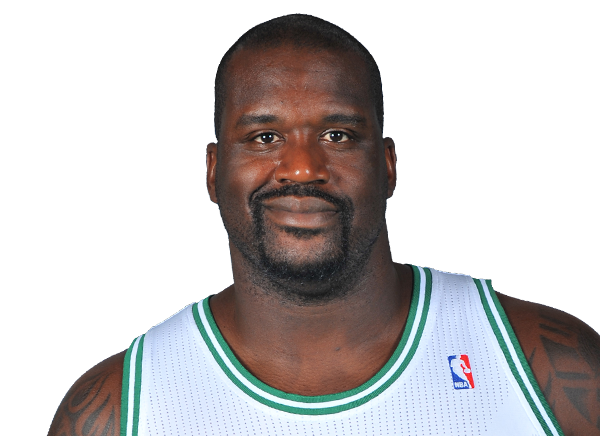

Shaquille Rashaun O'Neal born March 6, 1972, known commonly as Shaq, is an American former professional basketball player who is a sports analyst on the television program Inside the NBA. He is a 7-foot-1-inch (2.16 m) and 325-pound (147 kg) center who played for six teams over his 19-year career in the National Basketball Association (NBA) and is a four-time NBA champion. O'Neal is regarded as one of the greatest basketball players and centers of all time.
